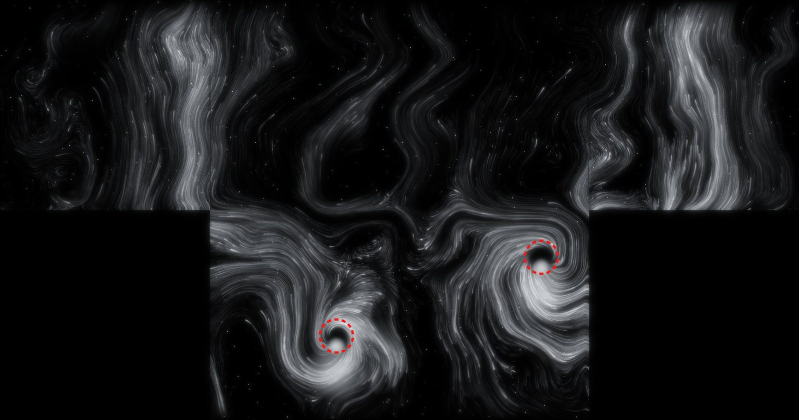
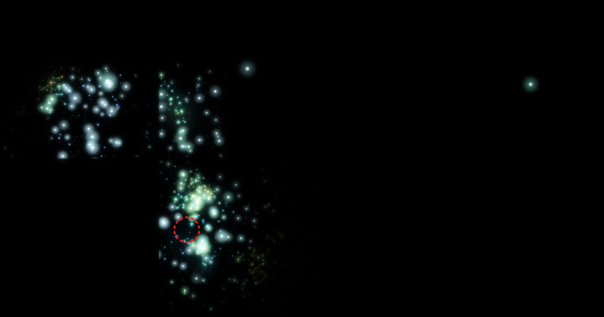
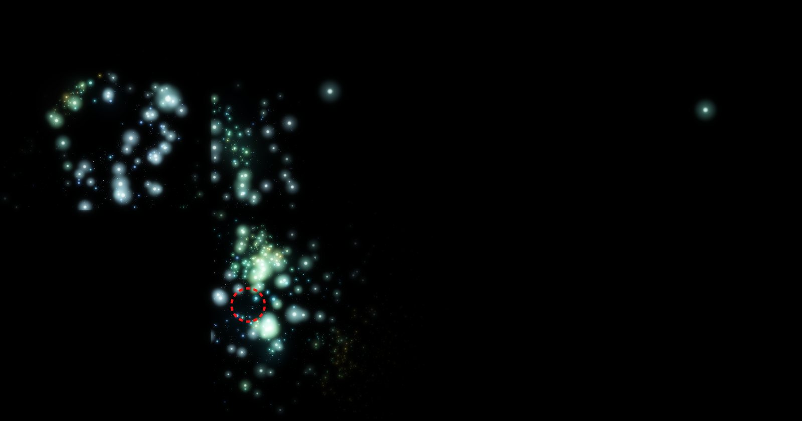
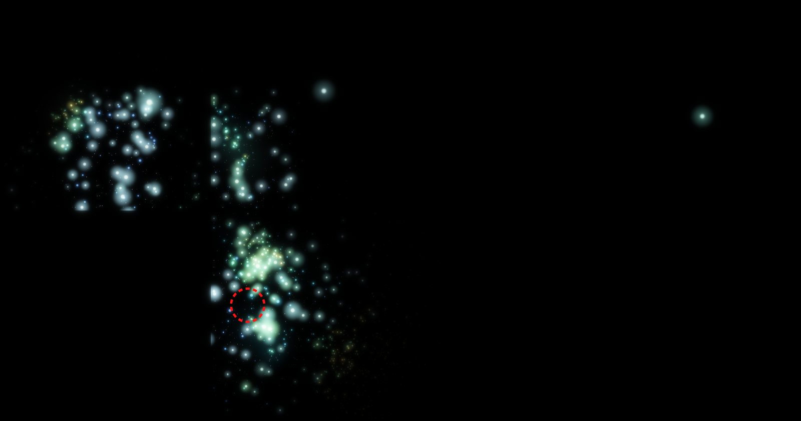
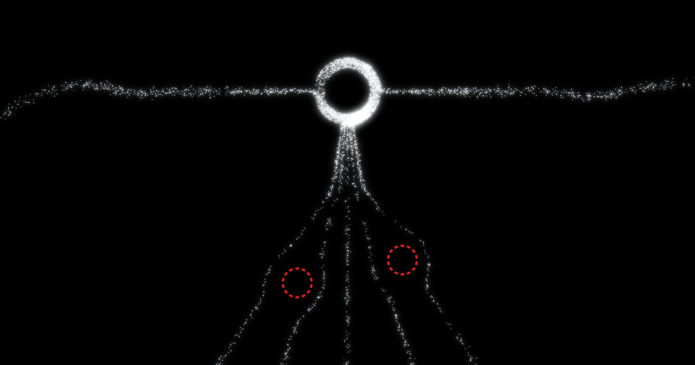
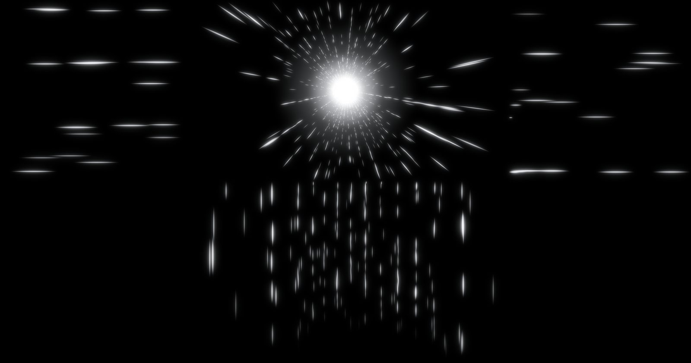
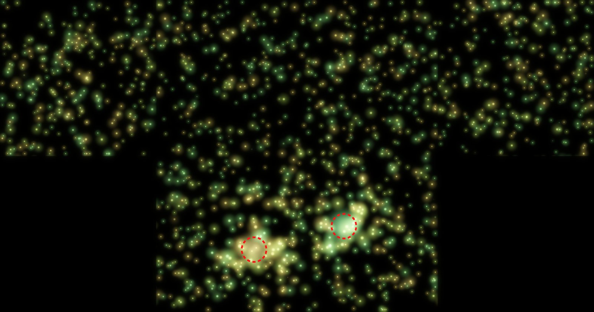
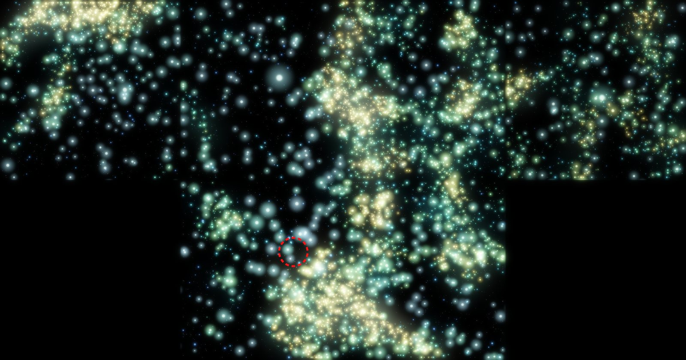
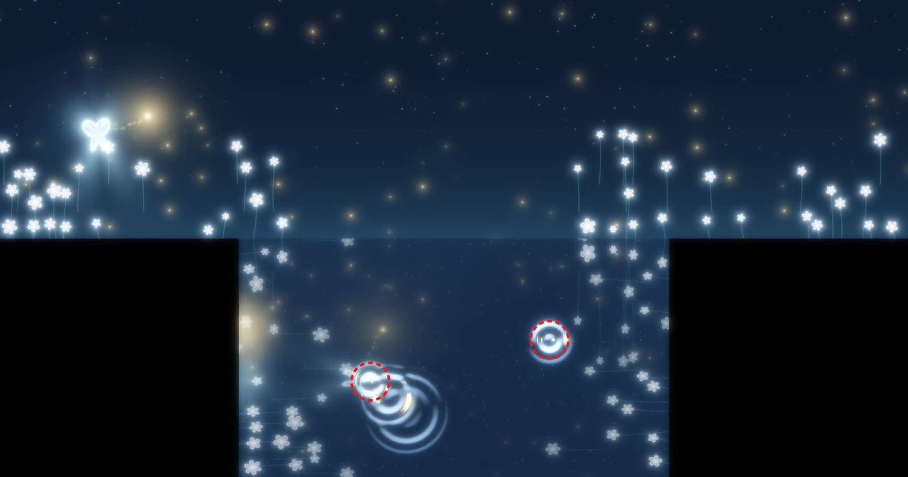
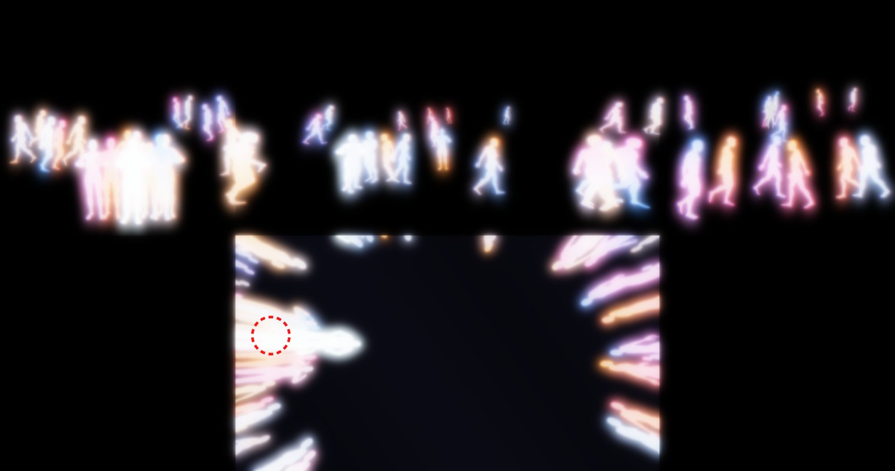

[프로젝트 디자인 & 개발전략] · 05
평가표의 다섯 항목을 순서대로 정리했습니다. 6주차 보고 이후 장면 씬 제작과 인터랙션 방식 수정이 크게 진행됐습니다.
바닥 위치만 감지해 반응을 주는 구조로 사용자 테스트를 해 보니, 관객은 벽에만 집중하고 바닥을 거의 보지 않았습니다.
바닥에서만 일어나는 반응은 관객이 알아채지 못해, 관객이 바라보는 벽도 반응하도록 고쳤습니다.
| 층 | 채택 기술 | 역할 · 선택 이유 | 상태 |
|---|---|---|---|
| 감지Input | Kinect v2 + Kinect for Windows SDK 2.0 | IR 뎁스 512×424 · 25관절 · 최대 6명. 어두운 전시장에서 RGB 카메라보다 IR 뎁스가 안정적. 위치(발목 관절)와 제스처(손 · 팔꿈치 · 척추)를 한 센서에서 동시에 얻음 | 현장 검증 |
| 예비 감지Backup | 웹캠 + MediaPipe TouchDesigner 플러그인 천장 뎁스 덩어리 추적 (자체 제작) | 키넥트 고장 대비(단종품). 천장 수직 설치처럼 스켈레톤이 안 잡히는 경우엔 뎁스맵에서 바닥보다 솟은 덩어리를 사람으로 셈 | 연구실 검증 |
| 인터랙션 · 렌더Process | Unity 2022.3.20f1 (Built-in RP) K2Examples 키넥트 플러그인 | 4면 전개도 시뮬레이션, 파티클 · 커스텀 셰이더 · GPU 파동 시뮬레이션. 4면을 3800×2000 한 장으로 출력하므로 TouchDesigner 무료판 출력 제한(1280×1280)을 피해 Unity 로 일원화 | 빌드 8개 |
| 출력 연결Output | KlakSpout (GPU 텍스처 공유) → MadMapper | 같은 PC 안에서 복사 없이 텍스처를 넘김. MadMapper 가 면마다 잘라 워핑 · 블렌딩. 시설 프로젝터는 위치 · 각도 고정이라 맞춤은 전부 맵핑에서 | 현장 검증 |
| 사운드 | Unity 실시간 합성 (OnAudioFilterRead) | 파일 없이 장면 상태(동기화 박자, 밝기)를 따라 패드 · 종 · 자연음 합성. 4채널 출력 예정 | 1장면 적용 |
| 프리비즈 · 에셋 | Blender 5.1 · Higgsfield · three.js | 발광 나비 3D 모델, 다음 장면 생성형 예상 영상, 웹 4면 시뮬레이터(5주차)로 구현 전 방향 확인 | 사용 중 |
| 작업 · 전시 PC | RTX 4060 (8GB) · RAM 32GB · Windows 11 | 파티클 6.4만 개 기준 프레임당 계산 약 10ms. GPU 출력 단자 수(프로젝터 4 + 모니터 1)는 시설 확인 필요 | 시설 확인 |
| 장면 · 반응 | 필요 기술 · 구현 방식 | 외부 사례 · 소스 | Unity 씬 | 상태 |
|---|---|---|---|---|
| 1 개미바닥 반응 · 회피 | 흰 점 개미떼가 좌벽 · 바닥 · 우벽에서 정면으로 줄지어 행진(레인 추종 조향 + 걸음 박동) → 관객은 돌아서 피함 → 정면 가운데 흰 원으로 수렴 | Ant colony 스티그머지(페로몬) 모형 → 1차 ANTS 씬. 너무 추상적이라는 피드백으로 레인 추종으로 교체 | ANTMARCH | 빌드 |
| 2 터널자동 | 정면 너머 60m 가상 복도의 점을 관객 눈높이(2m)에서 4면에 투사 · 로그 깊이 분포 · 소용돌이 → 가속 → 흰빛 → 암전 | 워프 · 스타필드 원근 투사 기법. 개미의 흰 원이 그대로 소실점이 됨 | TUNNEL | 에디터 검증 |
| 3 반딧불이근접 밝기 · 동기화 | 하나둘 켜짐 → 관객 근처 밝아짐 · 발밑 빛웅덩이 → 박자가 하나로 모임 → 좌벽 한 점만 남음 (다음 나비가 따라갈 빛) | Kuramoto · Strogatz 반딧불이 위상 동기화 모형 | FIREFLY_SIGNALFIREFLY_NEBULA_VEIL | 빌드 |
| 4 나비4-1 발밑 / 4-2 꽃잎 물결 | 벽 = 별 · 흰 꽃 · 앞서가는 빛과 발광 나비, 바닥 = 얕은 물. 걸으면 발밑 물결(4-1), 꽃잎이 떨어진 자리 물결(4-2) | GPU 2D 파동방정식(RenderTexture 핑퐁), Blender 발광 나비 모델 | BUTTERFLYBUTTERFLY_WATER | 빌드 |
| 5 크리스탈 동굴 · 거미자동 · 착시 | 레터박스(베젤) 위로 다리가 넘어오는 돌출 착시 · 거미집 (5-1 발견 / 5-2 짓기) | 6주차 호랑이 베젤 착시 현장 테스트 성공, 자체 SPIDERWEB 로프 렌더링 자산 | — | 씬 미착수 |
| 6 기억 회랑자동 | 화면이 휘어 기억 패널로 · 깊이 방향 패널 흐름 · 주마등 수렴 (A~D 분기) | 생성형 영상 소스 + 프리렌더 (디자인 파트) | 영상 재생 | 디자인 파트 |
| 7 사람방향 · 모임 반응 | 벽을 창문으로 삼아 바깥 광장의 3D 군중을 투시 · 관객이 걷는 방향으로 군중이 흐름 · 가까운 벽으로 모임 · 바닥 거울에 관객 자신이 비침 | 비대칭 투시 투영(Off-axis projection), 휴머노이드 모델 · 걷기 애니메이션 | PEOPLE3D | 빌드 |
센서 연결 · 텍스처 공유처럼 검증된 오픈소스가 있는 부분은 가져오고, 4면을 잇는 구조와 장면별 연출은 직접 만들었습니다.
| Kinect v2 ExamplesRF Solutions · Unity 에셋 | 센서 연결, 관절 · 뎁스 · 바디인덱스, 바닥 평면 자동 보정. 휴머노이드 모델 · 걷기 애니메이션 (외부 배포 시 라이선스 확인 필요) |
| KlakSpoutKeijiro Takahashi · 오픈소스 | Unity → MadMapper GPU 텍스처 공유. 프로젝트에 내장(2.0.5) |
| MadMapper상용 · 시설 | 4면 워핑 · 엣지 블렌딩. 스튜디오에서 사전 테스트 완료 |
| MediaPipe TD 플러그인오픈소스 | 웹캠 기반 실루엣 · 손 · 포즈 — 예비 감지 경로 |
| KSUtil 녹화본Kinect SDK 도구 | .xef 녹화본을 센서처럼 주입 → 센서 없이 개발 |
| Kuramoto 동기화반딧불이 집단 깜빡임 | 개체마다 위상, 이웃 박자로 끌림 → 관객 근처부터 박자가 맞음 |
| Curl noise 흐름장유체 같은 입자 흐름 | 방의 3D 좌표에서 노이즈를 뽑아 모서리 너머로 끊김 없이 흐름 |
| 2D 파동방정식GPU 수면 시뮬레이션 | 높이장 핑퐁 텍스처, 벽 반사, 감쇠 · 점성 → 나비 장면 바닥 물 |
| Off-axis 투시CAVE · 몰입형 룸 | 관객 눈높이 기준 벽마다 비대칭 원근 → 터널 · 사람 장면 |
| 호모그래피 4점 보정프로젝션 맵핑 표준 | 센서 바닥 좌표 → 투사면 좌표. 회전 · 사다리꼴을 한 번에 흡수 |




| 문제 | 원인 | 해결 방안 | 상태 |
|---|---|---|---|
| 감지 범위 부족 | 키넥트 1대가 덮는 바닥은 약 4.2×3.5m — 가로 7.2m 무대를 다 못 덮음, 정면 벽 가까이 끊김 | 천장 철골 왼쪽 300cm · 앞 끝선 안쪽 50cm에서 무대 안쪽을 사선 촬영. 부족하면 키넥트 2대 좌우 분할 | 현장 확인 |
| 설치 각도 vs 스켈레톤 | 키넥트 사람 인식은 정면 자세로 학습됨 → 천장 수직 하향이면 스켈레톤이 아예 안 잡힘 | 제스처엔 사선 설치가 전제. 수직이 불가피하면 뎁스 덩어리 추적(자체 제작)으로 위치만 — 제스처는 포기 | 현장 확인 |
| 관객이 바닥을 안 봄 | 시선이 벽 3면에 머물러 바닥 반응을 인지하지 못함 (사용자 테스트) | 벽 1m 안 손짓 제스처에 벽 입자 반응 추가. 다가가기만으로는 무반응 → 통제가 아닌 관계 | 구현 |
| 프로젝터 대비 부족 | 4면 전체에 입자가 깔리면 빔프로 쏠 때 바닥이 회색으로 떠 대비가 약함 | 어두운 모드 — 사람 둘레와 다가간 벽만 빛나고 나머지는 꺼짐. 빈 방엔 숨 쉬는 반딧불이 3마리만 | 구현 |
| 빛이 점선처럼 보임 | 점 8만 개로는 22㎡ × 4면에 빛이 모자람. 빠른 입자는 프레임마다 점 크기보다 멀리 감 | 잔상 누적(곱셈 페이드, 16비트 텍스처) + 속도 방향으로 늘인 렌더 + 블룸 두 겹 | 해결 |
| 모서리 밝은 세로줄 · 면별 밀도 차 | 전개도 거리로 미는 힘이 모서리 양쪽에서 모서리를 향함 / 노이즈 값 분포가 면마다 달라 좌벽이 비어 보임 | 벽에서는 옆 방향 힘을 위로 돌림 · 경계 허용오차 / 면마다 분위수를 재서 문턱을 맞춤 (좌벽 0.477 → 고르게) | 해결 |
| 연산 시간 | 4면 입자를 CPU 로 계산 — 프레임당 20ms | 벡터 연산을 실수로 풀고 이동 · 계산 루프를 합쳐 9ms. 무거운 장면은 셰이더 · GPU 시뮬레이션으로 | 해결 |
| 빌드가 센서를 못 엶 | 키넥트 네이티브 DLL 이 Assets 밖이라 Unity 빌드에 안 들어감 / 센서 없어도 "초기화됨"으로 보고 | 빌드 스크립트가 DLL 17개 자동 복사 · 센서 판정은 바디 프레임 시각이 실제로 증가하는지로 | 해결 |
| 위험 | 1안 (현재) | 대체 기술 | 스토리보드 수정 |
|---|---|---|---|
| 사선 자리에서 팔 관절 불안정 | Kinect v2 1대 · 천장 사선 · 스켈레톤 제스처 | 제스처 문턱 · 벽 거리 조정 → 안 되면 위치 + 머무른 시간으로 벽 반응 대체 | "손짓"을 "벽 앞에 머물기"로 안내 문구 변경 |
| 감지 폭 부족 | 키넥트 1대 | 키넥트 2대 좌우 분할 (PC 당 1대 제약 → PC 2대 + 네트워크) · Orbbec 보조 | 없음 · 체험 구역 바닥 표시만 추가 |
| 시설 PC 실시간 불가 | Unity 빌드 실시간 4면 출력 | 노트북 반입 · 또는 벽 3면 프리렌더 + 바닥만 실시간 | 벽 장면은 영상, 반응은 바닥 한정 |
| 프레임 저하 | 파티클 6.4만 · 프레임당 약 10ms | 입자 수 축소 · 셰이더 / Compute Shader 로 이전 | 밀도 낮은 장면으로 교체 가능 |
| 장면 5 · 6 미구현 | 실시간 장면 | 생성형 영상 · 디자인 파트 프리렌더 재생 | 5 · 6 을 영상 장면으로 표기 |
| 분기 미결정 (4 · 5 · 6) | 두 안 모두 시안 제작 (4-1 / 4-2 키 전환) | 현장 테스트 후 한 안 선택 | 고른 안의 프레임만 남김 |
아래 이미지는 모두 실제 출력 텍스처입니다(위 줄 좌벽 · 정면 · 우벽 / 아래 바닥). 빨간 점선 원은 테스트용 관객 위치입니다.





